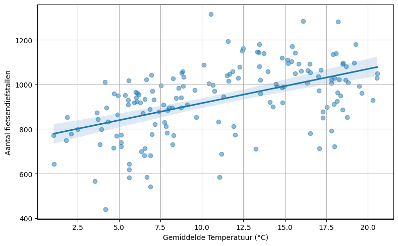
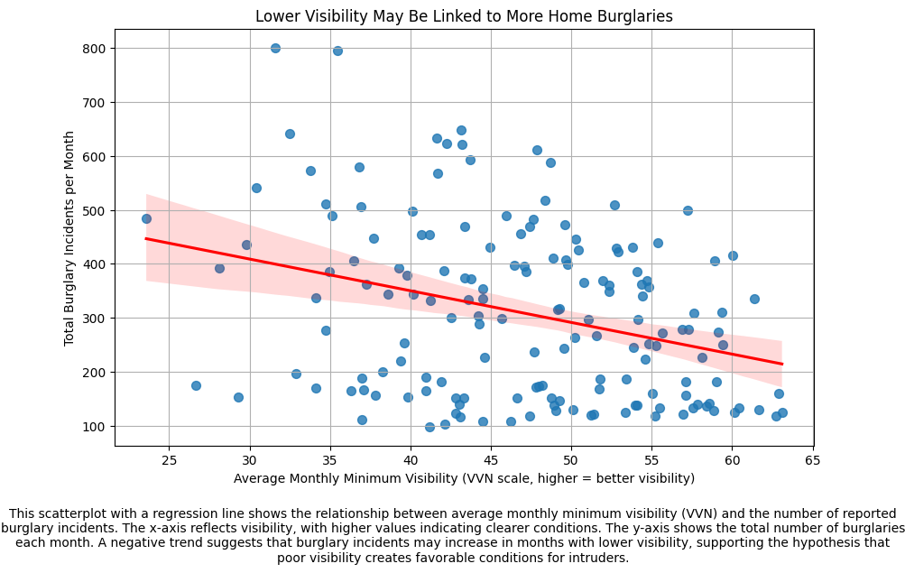
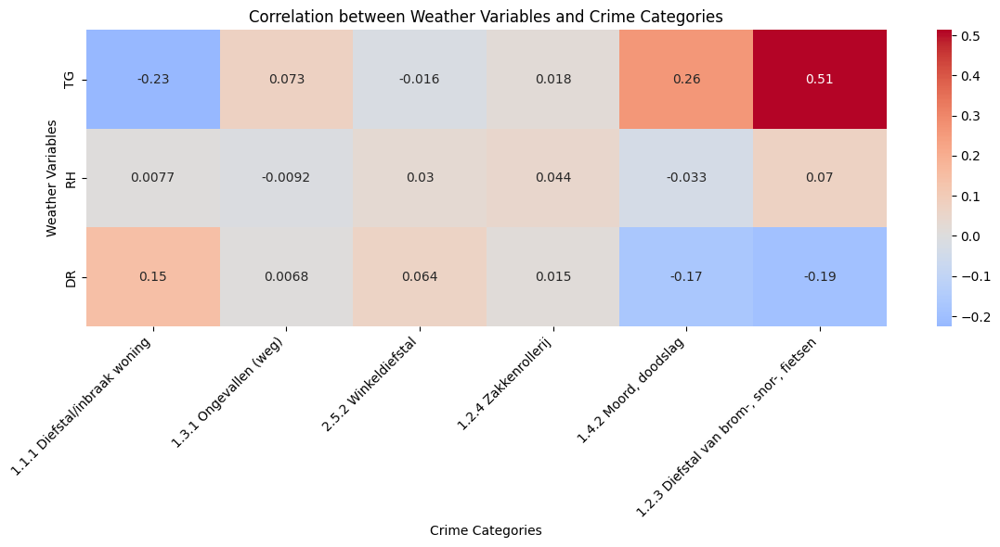
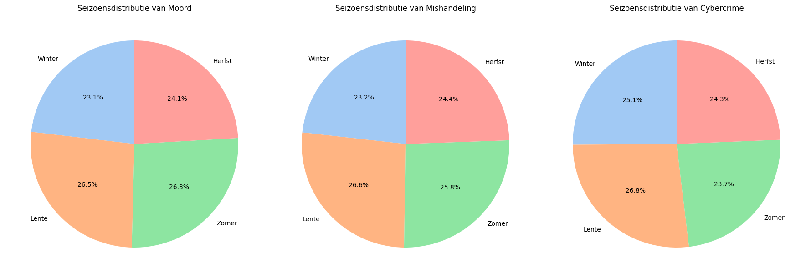
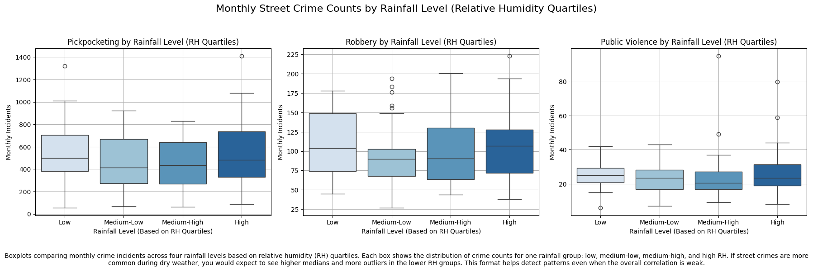

Data analyse voor technisch rapport#
import pandas as pd
import numpy as np
import plotly.express as px
import seaborn as sns
import matplotlib.pyplot as plt
from IPython.display import display, Markdown
Load data#
You can put your data at the same directory as the notebook file and then use pandas to load the data.
df = pd.read_csv("merged_weather_misdrijven_monthly_v3.csv")
df
df.columns = df.columns.str.strip()
df['TX'] = df['TX'] / 10 # TX is in tienden van °C
df['TG'] = df['TG'] / 10 # TG is in tienden van °C
display(Markdown("### Fietsendiefstallen tegenover maximale temperatuur"))
display(Markdown("_Lichte toename in diefstallen bij warmer weer._"))
# 📈 Plot maken
plt.figure(figsize=(8, 5))
sns.regplot(
x='TG',
y='1.2.3 Diefstal van brom-, snor-, fietsen',
data=df,
scatter_kws={'alpha': 0.5}
)
plt.xlabel("Gemiddelde Temperatuur (°C)")
plt.ylabel("Aantal fietsendiefstallen")
plt.grid(True)
plt.tight_layout()
plt.savefig('fietsdiefstal_temperatuur.png', dpi=300, bbox_inches='tight')
plt.show()
Fietsendiefstallen tegenover maximale temperatuur
Lichte toename in diefstallen bij warmer weer.
weer_vars = ["TG", "SQ", "VVN"]
misdaad_vars = ["1.1.1 Diefstal/inbraak woning",
"1.2.3 Diefstal van brom-, snor-, fietsen",
"1.4.2 Moord, doodslag",
"1.4.5 Mishandeling"]
# Zorg dat alles numeriek is
for col in misdaad_vars:
df[col] = pd.to_numeric(df[col], errors="coerce")
# Bereken alle combinaties van weer x misdaad
correlaties = pd.DataFrame(index=weer_vars, columns=misdaad_vars)
for w in weer_vars:
for m in misdaad_vars:
correlaties.loc[w, m] = df[w].corr(df[m])
print(correlaties)
1.1.1 Diefstal/inbraak woning 1.2.3 Diefstal van brom-, snor-, fietsen \
TG -0.22508 0.513662
SQ -0.283477 0.29488
VVN -0.318284 0.30128
1.4.2 Moord, doodslag 1.4.5 Mishandeling
TG 0.262466 0.388924
SQ 0.201248 0.36095
VVN 0.120308 0.250788
plt.figure(figsize=(10,6))
sns.regplot(data=df, x='VVN', y='1.1.1 Diefstal/inbraak woning', scatter_kws={'s':50}, line_kws={'color':'red'})
plt.title('Lower Visibility May Be Linked to More Home Burglaries')
plt.xlabel('Average Monthly Minimum Visibility (VVN scale, higher = better visibility)')
plt.ylabel('Total Burglary Incidents per Month')
plt.grid(True)
caption = (
"This scatterplot with a regression line shows the relationship between average monthly minimum visibility "
"(VVN) and the number of reported burglary incidents. The x-axis reflects visibility, with higher values indicating clearer conditions. "
"The y-axis shows the total number of burglaries each month. A negative trend suggests that burglary incidents may increase "
"in months with lower visibility, supporting the hypothesis that poor visibility creates favorable conditions for intruders."
)
plt.figtext(0.5, -0.1, caption, wrap=True, horizontalalignment='center', fontsize=10)
plt.show()

weer_vars = ['TG', 'RH', 'DR']
misdaad_vars = [
'1.1.1 Diefstal/inbraak woning',
'1.3.1 Ongevallen (weg)',
'2.5.2 Winkeldiefstal',
'1.2.4 Zakkenrollerij',
'1.4.2 Moord, doodslag',
'1.2.3 Diefstal van brom-, snor-, fietsen'
]
# Maak subset dataframe met weer en misdaad kolommen
df_subset = df[weer_vars + misdaad_vars]
# Bereken correlatie matrix
corr_matrix = df_subset.corr()
# Selecteer alleen correlaties tussen weer_vars (rijen) en misdaad_vars (kolommen)
corr_submatrix = corr_matrix.loc[weer_vars, misdaad_vars]
import matplotlib.pyplot as plt
import seaborn as sns
plt.figure(figsize=(12, 6))
sns.heatmap(corr_submatrix, annot=True, cmap='coolwarm', center=0)
plt.title('Correlation between Weather Variables and Crime Categories')
plt.xlabel('Crime Categories')
plt.ylabel('Weather Variables')
plt.xticks(rotation=45, ha='right')
plt.tight_layout()
plt.show()

# Map each month number to a season
season_map = {
1: 'Winter', 2: 'Winter', 12: 'Winter',
3: 'Lente', 4: 'Lente', 5: 'Lente',
6: 'Zomer', 7: 'Zomer', 8: 'Zomer',
9: 'Herfst', 10: 'Herfst', 11: 'Herfst'
}
# Extract numeric month from 'year_month' and map to season
df['month'] = pd.to_datetime(df['year_month']).dt.month
df['Season'] = df['month'].map(season_map)
# Serious crime columns and their display names
serious_crimes = {
'1.4.2 Moord, doodslag': 'Moord',
'1.4.5 Mishandeling': 'Mishandeling',
'3.7.4 Cybercrime': 'Cybercrime'
}
# Create pie charts
fig, axes = plt.subplots(1, 3, figsize=(18, 6))
for ax, (col, label) in zip(axes, serious_crimes.items()):
# Total incidents per season for each crime
season_totals = df.groupby('Season')[col].sum().reindex(['Winter', 'Lente', 'Zomer', 'Herfst'])
# Pie chart
ax.pie(
season_totals,
labels=season_totals.index,
autopct='%1.1f%%',
startangle=90,
colors=sns.color_palette("pastel")[0:4]
)
ax.set_title(f'Seizoensdistributie van {label}')
plt.tight_layout()
plt.savefig('seizoen_misdaad.png', dpi=300, bbox_inches='tight')
plt.show()

# Create RH quartiles (low to high rainfall)
df['Rainfall_Level'] = pd.qcut(df['RH'], 4, labels=['Low', 'Medium-Low', 'Medium-High', 'High'])
# Set up figure
crime_columns = {
'1.2.4 Zakkenrollerij': 'Pickpocketing',
'1.4.6 Straatroof': 'Robbery',
'1.4.3 Openlijk geweld (persoon)': 'Public Violence'
}
plt.figure(figsize=(18, 5))
for i, (col, label) in enumerate(crime_columns.items(), 1):
plt.subplot(1, 3, i)
sns.boxplot(data=df, x='Rainfall_Level', y=col, hue='Rainfall_Level', palette='Blues', legend=False)
plt.title(f'{label} by Rainfall Level (RH Quartiles)')
plt.xlabel('Rainfall Level (Based on RH Quartiles)')
plt.ylabel('Monthly Incidents')
plt.grid(True)
plt.suptitle('Monthly Street Crime Counts by Rainfall Level (Relative Humidity Quartiles)', fontsize=16, y=1.05)
caption = (
"Boxplots comparing monthly crime incidents across four rainfall levels based on relative humidity (RH) quartiles. "
"Each box shows the distribution of crime counts for one rainfall group: low, medium-low, medium-high, and high RH. "
"If street crimes are more common during dry weather, you would expect to see higher medians and more outliers in the lower RH groups. "
"This format helps detect patterns even when the overall correlation is weak."
)
plt.figtext(0.5, -0.1, caption, wrap=True, horizontalalignment='center', fontsize=10)
plt.tight_layout()
plt.show()

import pandas as pd
import plotly.graph_objects as go
from ipywidgets import FloatSlider, VBox, interactive_output
crime_columns = {
'Pickpocketing': '1.2.4 Zakkenrollerij',
'Robbery': '1.4.6 Straatroof',
'Public violence': '1.4.3 Openlijk geweld (persoon)',
'Under influence on boat': '3.4.2 Onder invloed (water)'
}
def plot_multiple_crimes(temp):
lower = temp - 0.5
upper = temp + 0.5
filtered = df[(df['TX'] >= lower) & (df['TX'] < upper)]
percentages = []
for label, col in crime_columns.items():
total = df[col].sum()
count_at_temp = filtered[col].sum()
percentage = (count_at_temp / total) * 100 if total > 0 else 0
percentages.append((label, percentage))
fig = go.Figure()
for label, percentage in percentages:
fig.add_trace(go.Bar(
x=[label],
y=[percentage],
name=label,
text=f"{percentage:.2f}%",
textposition='auto'
))
fig.update_layout(
height=550,
margin=dict(t=140, b=60),
yaxis_title="Percentage of Total Incidents",
xaxis_title="Crime Type",
yaxis_range=[0, 15],
# Title + subtitle via annotations
annotations=[
dict(
text="Crime Distribution by Temperature Range",
xref='paper', yref='paper',
x=0.5, y=1.15,
showarrow=False,
font=dict(size=22, color='black'),
xanchor='center', yanchor='bottom'
),
dict(
text="Crime patterns vary with temperature, but no clear linear trend emerges for most crimes, exceptions exist: under influence on boat for example.",
xref='paper', yref='paper',
x=0.5, y=1.08,
showarrow=False,
font=dict(size=14, color='gray'),
xanchor='center', yanchor='bottom'
)
]
)
fig.show(renderer="notebook_connected")
temperature_slider = FloatSlider(value=20, min=5, max=26.5, step=0.5, description='Temp (°C)')
out = interactive_output(plot_multiple_crimes, {'temp': temperature_slider})
VBox([out, temperature_slider])